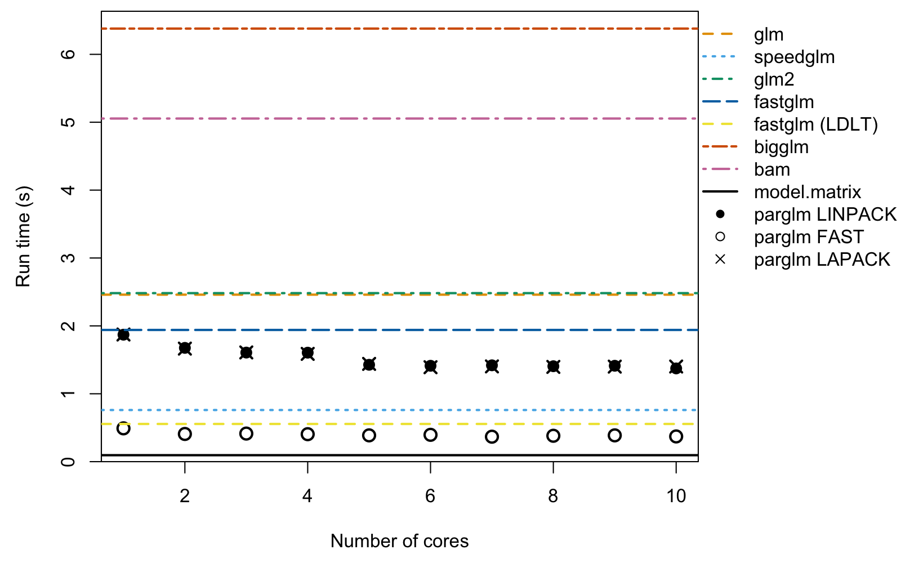
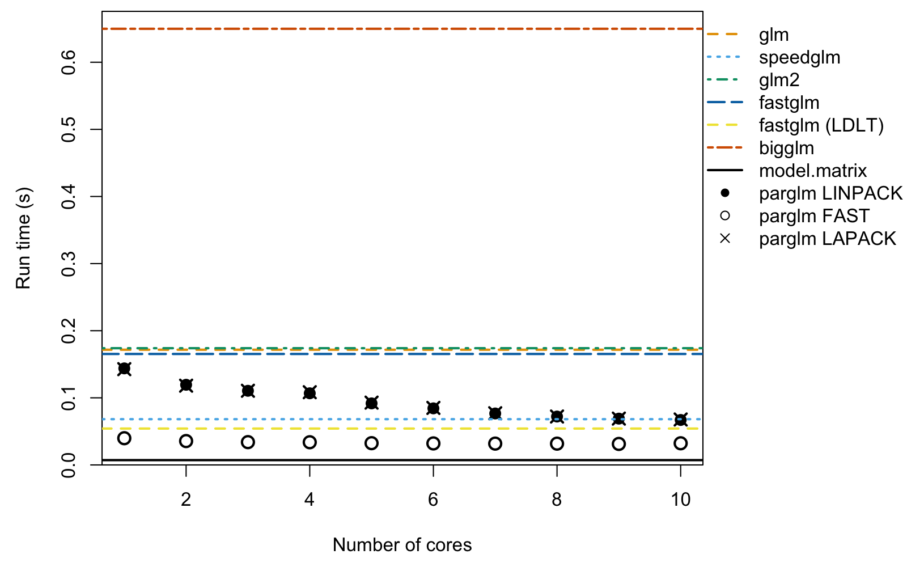
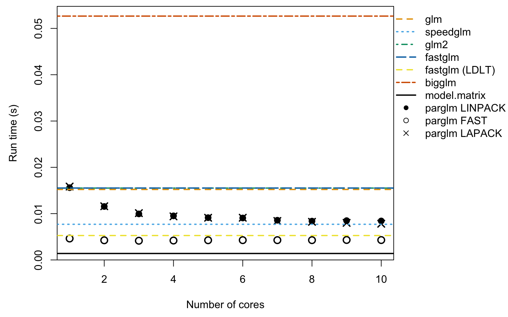
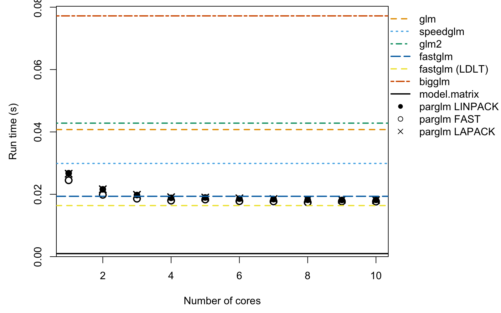
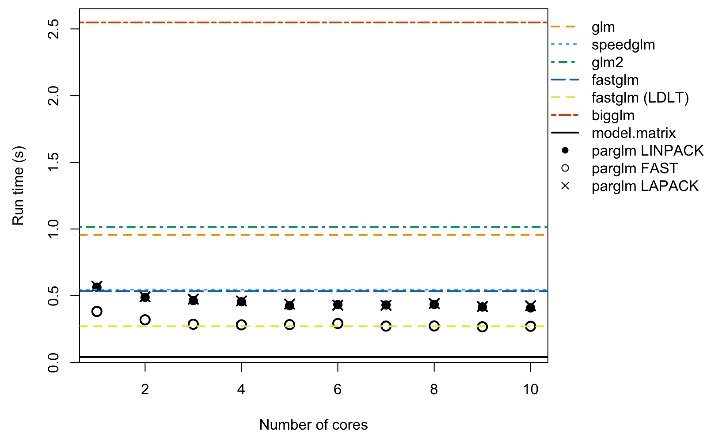

Introduction to the parglm package
Benjamin Christoffersen and Tom Palmer
2026-05-12
Source:vignettes/parglm.Rmd
parglm.RmdThe motivation for the parglm package is a parallel
version of the glm function. It solves the iteratively
re-weighted least squares using a QR decomposition with column pivoting
with DGEQP3 function from LAPACK. The computation is done
in parallel as in the bam function in the mgcv
package. The cost is an additional \(O(Mp^2 +
p^3)\) where \(p\) is the number
of coefficients and \(M\) is the number
chunks to be computed in parallel. The advantage is that you do not need
to compile the package with an optimized BLAS or LAPACK which supports
multithreading. The package also includes a method that computes the
Fisher information and then solves the normal equation as in the
speedglm package. This is faster but less numerically
stable.
Example of computation time
Below, we estimate a logistic regression with 1000000 observations
and 50 covariates. We vary the number of cores being used with the
nthreads argument to parglm.control. The
method argument sets which method is used.
LINPACK uses the same pivoted QR (dqrdc2) as
glm.fit for the final decomposition; LAPACK
uses DGEQP3 from LAPACK throughout; and FAST
solves the normal equations from the Fisher information, similar to the
speedglm package.
#####
# simulate
n # number of observations
#> [1] 1000000
p # number of covariates
#> [1] 50
set.seed(68024947)
X <- matrix(rnorm(n * p, 1/p, 1/sqrt(p)), n, ncol = p)
df <- data.frame(y = 1/(1 + exp(-(rowSums(X) - 1))) > runif(n), X)
#####
# compute and measure time. Setup call to make
library(microbenchmark)
library(speedglm)
#> Loading required package: Matrix
#> Loading required package: MASS
#> Loading required package: biglm
#> Loading required package: DBI
library(fastglm)
library(glm2)
#>
#> Attaching package: 'glm2'
#> The following object is masked from 'package:MASS':
#>
#> crabs
library(biglm)
library(mgcv)
#> Loading required package: nlme
#> This is mgcv 1.9-4. For overview type '?mgcv'.
#>
#> Attaching package: 'mgcv'
#> The following object is masked from 'package:fastglm':
#>
#> negbin
library(parglm)
X_mat <- model.matrix(y ~ ., df)
biglm_form <- reformulate(names(df)[-1], response = "y")
bam_form <- biglm_form
cl <- list(
quote(microbenchmark),
glm = quote(glm (y ~ ., binomial(), df)),
speedglm = quote(speedglm(y ~ ., family = binomial(), data = df)),
glm2 = quote(glm2 (y ~ ., binomial(), df)),
fastglm = quote(fastglm (X_mat, as.numeric(df$y), family = binomial())),
fastglm3 = quote(fastglm (X_mat, as.numeric(df$y), family = binomial(), method = 3L)),
bigglm = quote(bigglm (biglm_form, df, family = binomial())),
bam = quote(bam (bam_form, family = binomial(), data = df)),
times = 11L)
tfunc <- function(method = "LINPACK", nthreads)
parglm(y ~ ., binomial(), df, control = parglm.control(method = method,
nthreads = nthreads))
cl <- c(
cl, lapply(1:n_threads, function(i) bquote(tfunc(nthreads = .(i)))))
names(cl)[10:(10L + n_threads - 1L)] <- paste0("parglm-LINPACK-", 1:n_threads)
cl <- c(
cl, lapply(1:n_threads, function(i) bquote(tfunc(
nthreads = .(i), method = "FAST"))))
names(cl)[(10L + n_threads):(10L + 2L * n_threads - 1L)] <-
paste0("parglm-FAST-", 1:n_threads)
cl <- c(
cl, lapply(1:n_threads, function(i) bquote(tfunc(
nthreads = .(i), method = "LAPACK"))))
names(cl)[(10L + 2L * n_threads):(10L + 3L * n_threads - 1L)] <-
paste0("parglm-LAPACK-", 1:n_threads)
cl <- as.call(cl)
cl # the call we make
#> microbenchmark(glm = glm(y ~ ., binomial(), df), speedglm = speedglm(y ~
#> ., family = binomial(), data = df), glm2 = glm2(y ~ ., binomial(),
#> df), fastglm = fastglm(X_mat, as.numeric(df$y), family = binomial()),
#> fastglm3 = fastglm(X_mat, as.numeric(df$y), family = binomial(),
#> method = 3L), bigglm = bigglm(biglm_form, df, family = binomial()),
#> bam = bam(bam_form, family = binomial(), data = df), times = 11L,
#> `parglm-LINPACK-1` = tfunc(nthreads = 1L), `parglm-LINPACK-2` = tfunc(nthreads = 2L),
#> `parglm-LINPACK-3` = tfunc(nthreads = 3L), `parglm-LINPACK-4` = tfunc(nthreads = 4L),
#> `parglm-LINPACK-5` = tfunc(nthreads = 5L), `parglm-LINPACK-6` = tfunc(nthreads = 6L),
#> `parglm-LINPACK-7` = tfunc(nthreads = 7L), `parglm-LINPACK-8` = tfunc(nthreads = 8L),
#> `parglm-LINPACK-9` = tfunc(nthreads = 9L), `parglm-LINPACK-10` = tfunc(nthreads = 10L),
#> `parglm-FAST-1` = tfunc(nthreads = 1L, method = "FAST"),
#> `parglm-FAST-2` = tfunc(nthreads = 2L, method = "FAST"),
#> `parglm-FAST-3` = tfunc(nthreads = 3L, method = "FAST"),
#> `parglm-FAST-4` = tfunc(nthreads = 4L, method = "FAST"),
#> `parglm-FAST-5` = tfunc(nthreads = 5L, method = "FAST"),
#> `parglm-FAST-6` = tfunc(nthreads = 6L, method = "FAST"),
#> `parglm-FAST-7` = tfunc(nthreads = 7L, method = "FAST"),
#> `parglm-FAST-8` = tfunc(nthreads = 8L, method = "FAST"),
#> `parglm-FAST-9` = tfunc(nthreads = 9L, method = "FAST"),
#> `parglm-FAST-10` = tfunc(nthreads = 10L, method = "FAST"),
#> `parglm-LAPACK-1` = tfunc(nthreads = 1L, method = "LAPACK"),
#> `parglm-LAPACK-2` = tfunc(nthreads = 2L, method = "LAPACK"),
#> `parglm-LAPACK-3` = tfunc(nthreads = 3L, method = "LAPACK"),
#> `parglm-LAPACK-4` = tfunc(nthreads = 4L, method = "LAPACK"),
#> `parglm-LAPACK-5` = tfunc(nthreads = 5L, method = "LAPACK"),
#> `parglm-LAPACK-6` = tfunc(nthreads = 6L, method = "LAPACK"),
#> `parglm-LAPACK-7` = tfunc(nthreads = 7L, method = "LAPACK"),
#> `parglm-LAPACK-8` = tfunc(nthreads = 8L, method = "LAPACK"),
#> `parglm-LAPACK-9` = tfunc(nthreads = 9L, method = "LAPACK"),
#> `parglm-LAPACK-10` = tfunc(nthreads = 10L, method = "LAPACK"))
out <- eval(cl)
#> Warning in microbenchmark(glm = glm(y ~ ., binomial(), df), speedglm =
#> speedglm(y ~ : less accurate nanosecond times to avoid potential integer
#> overflows
s <- summary(out) # result from `microbenchmark`
print(s[, c("expr", "min", "mean", "median", "max")], digits = 3,
row.names = FALSE)
#> expr min mean median max
#> glm 2404 2480 2460 2663
#> speedglm 725 787 761 1065
#> glm2 2427 2526 2482 2976
#> fastglm 1895 1992 1940 2162
#> fastglm3 547 558 555 585
#> bigglm 6173 6416 6379 7011
#> bam 4906 5067 5055 5340
#> parglm-LINPACK-1 1825 1879 1870 1963
#> parglm-LINPACK-2 1646 1704 1676 1832
#> parglm-LINPACK-3 1569 1608 1607 1648
#> parglm-LINPACK-4 1560 1611 1605 1743
#> parglm-LINPACK-5 1397 1439 1427 1537
#> parglm-LINPACK-6 1398 1421 1412 1471
#> parglm-LINPACK-7 1379 1473 1419 1713
#> parglm-LINPACK-8 1356 1457 1406 1846
#> parglm-LINPACK-9 1382 1418 1413 1465
#> parglm-LINPACK-10 1347 1372 1374 1393
#> parglm-FAST-1 449 510 491 592
#> parglm-FAST-2 387 414 408 488
#> parglm-FAST-3 372 414 414 460
#> parglm-FAST-4 367 423 405 527
#> parglm-FAST-5 381 431 387 675
#> parglm-FAST-6 348 413 395 584
#> parglm-FAST-7 347 374 368 406
#> parglm-FAST-8 348 393 381 454
#> parglm-FAST-9 348 407 387 556
#> parglm-FAST-10 338 373 372 440
#> parglm-LAPACK-1 1825 1885 1873 2058
#> parglm-LAPACK-2 1646 1670 1665 1733
#> parglm-LAPACK-3 1586 1617 1609 1685
#> parglm-LAPACK-4 1557 1598 1588 1676
#> parglm-LAPACK-5 1390 1444 1440 1580
#> parglm-LAPACK-6 1378 1399 1391 1451
#> parglm-LAPACK-7 1368 1411 1403 1489
#> parglm-LAPACK-8 1376 1403 1396 1475
#> parglm-LAPACK-9 1365 1420 1400 1597
#> parglm-LAPACK-10 1363 1413 1401 1507The plot below shows median run times versus the number of cores.
Coloured horizontal lines show the single-threaded reference times for
glm, speedglm, glm2,
fastglm, bigglm, and bam. We
could have used glm.fit and parglm.fit. This
would make the relative difference bigger as both call e.g.,
model.matrix and model.frame which do take
some time. To show this point, we first compute how much time this takes
and then we make the plot. The black solid line is the computation time
of model.matrix and model.frame.
modmat_time <- microbenchmark(
modmat_time = {
mf <- model.frame(y ~ ., df); model.matrix(terms(mf), mf)
}, times = 10)
modmat_time # time taken by `model.matrix` and `model.frame`
#> Unit: milliseconds
#> expr min lq mean median uq max
#> modmat_time 75.486453 93.180659 98.3097262 95.229306 112.323805 121.203257
#> neval
#> 10
par(mar = c(4.5, 4.5, .5, 9))
o <- aggregate(time ~ expr, out, median)[, 2] / 10^9
ylim <- range(o, 0); ylim[2] <- ylim[2] + .04 * diff(ylim)
o_linpack <- o[8L:(n_threads + 7L)]
o_fast <- o[(n_threads + 8L):(2L * n_threads + 7L)]
o_lapack <- o[(2L * n_threads + 8L):(3L * n_threads + 7L)]
ref_cols <- c("#E69F00", "#56B4E9", "#009E73", "#0072B2", "#F0E442", "#D55E00", "#CC79A7")
ref_lty <- c("dashed", "dotted", "dotdash", "longdash", "44", "twodash", "1373")
plot(1:n_threads, o_linpack, xlab = "Number of cores", yaxs = "i",
ylim = ylim, ylab = "Run time (s)", pch = 16, cex = 1.4)
points(1:n_threads, o_fast, pch = 1, cex = 1.4, lwd = 2)
points(1:n_threads, o_lapack, pch = 4, cex = 1.4, lwd = 2)
for (i in 1:7)
abline(h = o[i], lty = ref_lty[i], col = ref_cols[i], lwd = 2)
abline(h = median(modmat_time$time) / 10^9, lty = "solid", col = "black",
lwd = 2)
usr <- par("usr")
par(xpd = TRUE)
legend(x = usr[2], y = usr[4], xjust = 0, yjust = 1,
legend = c("glm", "speedglm", "glm2", "fastglm", "fastglm (LDLT)",
"bigglm", "bam", "model.matrix", "parglm LINPACK",
"parglm FAST", "parglm LAPACK"),
lty = c(ref_lty, "solid", NA, NA, NA),
lwd = c(2, 2, 2, 2, 2, 2, 2, 2, NA, NA, NA),
col = c(ref_cols, "black", "black", "black", "black"),
pch = c(NA, NA, NA, NA, NA, NA, NA, NA, 16, 1, 4),
bty = "n")
Plot of runtime versus number of cores.
The open circles are the FAST method and the filled
circles are the LINPACK method. The FAST
method, speedglm, fastglm, and
fastglm (LDLT) all compute the Fisher information and solve
the normal equation; fastglm (LDLT) uses an LDLT Cholesky
decomposition (method 3) rather than the default column-pivoted QR
(method 0). This is an advantage in terms of computation cost but may
lead to unstable solutions. You can alter the number of observations in
each parallel chunk with the block_size argument of
parglm.control.
The single threaded performance of parglm may be slower
when there are more coefficients. The cause seems to be the difference
between the LAPACK and LINPACK implementation. This is presumably due to
either the QR decomposition method and/or the qr.qty
method. On Windows, parglm does seem slower when built with
Rtools and the reason seems to be the qr.qty
method in LAPACK, dormqr, which is slower than the LINPACK
method, dqrsl. Below is an illustration of the computation
times on this machine.
qr1 <- qr(X)
qr2 <- qr(X, LAPACK = TRUE)
microbenchmark::microbenchmark(
`qr LINPACK` = qr(X),
`qr LAPACK` = qr(X, LAPACK = TRUE),
`qr.qty LINPACK` = qr.qty(qr1, df$y),
`qr.qty LAPACK` = qr.qty(qr2, df$y),
times = 11)
#> Unit: milliseconds
#> expr min lq mean median uq
#> qr LINPACK 405.653672 417.4386915 423.2286798 418.273882 419.5840165
#> qr LAPACK 366.584813 368.9630590 378.3611275 371.411456 381.3625660
#> qr.qty LINPACK 45.758993 49.6602865 97.6999660 56.960808 84.8598935
#> qr.qty LAPACK 110.668717 110.8921875 116.2642069 111.939102 114.2420515
#> max neval
#> 474.846625 11
#> 403.544468 11
#> 401.498322 11
#> 155.756827 11Smaller datasets
For smaller datasets the per-call overhead of parglm’s
thread pool can exceed the gains from parallelism. Below we repeat the
benchmark for n = 100,000 and n = 10,000,
dropping bam since it is aimed at much larger problems.
Note the default block_size of parglm.control
is 10000, so when n = 10,000 the work cannot
be split further across threads and parglm effectively runs
single-threaded regardless of nthreads.
n = 100,000
invisible(run_and_plot(n = 100000L, p = 50L, n_threads = n_threads))
#> expr min mean median max
#> glm 167.5 172.2 171.7 183.0
#> speedglm 64.1 71.4 68.2 106.7
#> glm2 170.6 194.5 174.0 290.1
#> fastglm 165.0 168.5 165.4 175.8
#> fastglm (LDLT) 53.7 54.9 54.2 56.9
#> bigglm 634.7 684.7 649.9 812.6
#> parglm-LINPACK-1 140.7 145.6 143.9 161.3
#> parglm-LINPACK-2 116.6 119.7 119.4 125.3
#> parglm-LINPACK-3 108.9 111.3 110.5 115.0
#> parglm-LINPACK-4 104.7 107.8 106.8 113.4
#> parglm-LINPACK-5 89.6 92.1 91.7 96.8
#> parglm-LINPACK-6 81.8 84.8 84.3 89.5
#> parglm-LINPACK-7 75.7 78.6 76.7 88.5
#> parglm-LINPACK-8 69.4 72.5 72.1 77.2
#> parglm-LINPACK-9 67.1 70.4 69.0 86.9
#> parglm-LINPACK-10 66.1 68.3 67.0 77.0
#> parglm-FAST-1 39.0 40.1 39.8 41.5
#> parglm-FAST-2 34.8 39.0 35.6 61.5
#> parglm-FAST-3 33.6 34.8 34.0 40.6
#> parglm-FAST-4 33.3 35.3 33.8 44.2
#> parglm-FAST-5 31.9 35.8 32.4 55.8
#> parglm-FAST-6 31.6 33.4 32.1 39.7
#> parglm-FAST-7 31.5 32.5 31.8 35.5
#> parglm-FAST-8 31.4 33.2 31.7 38.8
#> parglm-FAST-9 30.7 31.5 31.3 33.3
#> parglm-FAST-10 30.9 33.5 32.3 45.3
#> parglm-LAPACK-1 141.4 143.0 142.7 145.5
#> parglm-LAPACK-2 117.1 119.2 118.1 124.2
#> parglm-LAPACK-3 109.7 111.8 110.5 116.5
#> parglm-LAPACK-4 106.5 112.7 108.4 140.4
#> parglm-LAPACK-5 90.1 93.7 92.8 99.8
#> parglm-LAPACK-6 81.8 84.5 85.0 87.7
#> parglm-LAPACK-7 75.3 78.2 77.0 91.7
#> parglm-LAPACK-8 68.4 73.6 72.1 92.8
#> parglm-LAPACK-9 66.4 70.3 69.0 87.1
#> parglm-LAPACK-10 65.8 68.9 67.7 75.7
Plot of runtime versus number of cores for n = 100,000.
n = 10,000
invisible(run_and_plot(n = 10000L, p = 50L, n_threads = n_threads))
#> expr min mean median max
#> glm 14.64 16.61 15.22 31.62
#> speedglm 6.87 7.58 7.70 8.00
#> glm2 14.59 15.43 15.52 15.93
#> fastglm 15.04 15.46 15.53 15.68
#> fastglm (LDLT) 5.16 5.27 5.27 5.36
#> bigglm 52.27 53.49 52.66 60.58
#> parglm-LINPACK-1 15.04 15.62 15.60 16.40
#> parglm-LINPACK-2 11.18 11.53 11.54 11.91
#> parglm-LINPACK-3 9.78 10.68 9.94 17.19
#> parglm-LINPACK-4 8.83 9.37 9.52 9.85
#> parglm-LINPACK-5 8.83 9.11 9.13 9.43
#> parglm-LINPACK-6 8.98 9.15 9.06 9.43
#> parglm-LINPACK-7 8.33 8.59 8.57 8.85
#> parglm-LINPACK-8 8.31 8.43 8.38 8.71
#> parglm-LINPACK-9 8.26 8.49 8.49 8.74
#> parglm-LINPACK-10 8.20 8.48 8.42 8.99
#> parglm-FAST-1 4.43 4.67 4.63 4.99
#> parglm-FAST-2 4.08 4.26 4.25 4.50
#> parglm-FAST-3 4.01 4.17 4.15 4.42
#> parglm-FAST-4 4.06 4.19 4.19 4.35
#> parglm-FAST-5 4.02 4.25 4.25 4.51
#> parglm-FAST-6 4.20 4.27 4.27 4.39
#> parglm-FAST-7 4.20 4.28 4.28 4.46
#> parglm-FAST-8 4.20 4.31 4.27 4.68
#> parglm-FAST-9 4.19 5.12 4.31 13.06
#> parglm-FAST-10 4.20 4.29 4.29 4.40
#> parglm-LAPACK-1 15.20 15.76 15.85 16.37
#> parglm-LAPACK-2 10.73 11.45 11.59 11.89
#> parglm-LAPACK-3 9.74 10.11 10.11 10.60
#> parglm-LAPACK-4 9.00 9.40 9.41 9.68
#> parglm-LAPACK-5 8.76 9.13 9.11 9.61
#> parglm-LAPACK-6 8.79 9.08 9.11 9.42
#> parglm-LAPACK-7 8.16 8.43 8.42 8.80
#> parglm-LAPACK-8 7.92 8.23 8.24 8.69
#> parglm-LAPACK-9 7.86 8.02 8.01 8.17
#> parglm-LAPACK-10 7.71 7.81 7.82 7.97
Plot of runtime versus number of cores for n = 10,000.
Varying the number of coefficients
The per-row cost of each method scales roughly with \(p^2\) (computing \(X'WX\) at each IRLS iteration), while
parglm’s thread-pool overhead is roughly fixed per call. The two effects
compete: with small \(p\) the overhead
dominates the parallel benefit, while with larger \(p\) the parallel work amortizes the
overhead and parglm pulls ahead. Below we contrast
n = 100,000, p = 5 (where the overhead wins) with
n = 1,000,000, p = 20 (where the parallel work wins).
n = 100,000, p = 5
invisible(run_and_plot(n = 100000L, p = 5L, n_threads = n_threads))
#> expr min mean median max
#> glm 40.3 41.6 40.8 46.3
#> speedglm 29.4 30.1 29.9 32.9
#> glm2 42.3 43.2 42.8 45.4
#> fastglm 19.1 19.5 19.4 21.3
#> fastglm (LDLT) 16.0 16.7 16.4 19.9
#> bigglm 76.6 77.3 77.2 78.0
#> parglm-LINPACK-1 26.3 27.1 26.8 30.6
#> parglm-LINPACK-2 21.5 21.6 21.6 21.9
#> parglm-LINPACK-3 19.4 20.1 19.8 24.0
#> parglm-LINPACK-4 18.7 18.9 18.9 19.3
#> parglm-LINPACK-5 18.9 19.1 19.0 20.2
#> parglm-LINPACK-6 18.5 18.8 18.6 20.7
#> parglm-LINPACK-7 18.2 18.8 18.4 22.3
#> parglm-LINPACK-8 17.9 18.5 18.2 20.0
#> parglm-LINPACK-9 17.8 18.2 18.2 18.5
#> parglm-LINPACK-10 18.1 18.9 18.2 22.6
#> parglm-FAST-1 24.0 24.8 24.5 26.4
#> parglm-FAST-2 19.4 19.9 19.8 20.3
#> parglm-FAST-3 18.3 18.6 18.6 18.9
#> parglm-FAST-4 17.7 18.1 18.0 19.4
#> parglm-FAST-5 18.1 18.8 18.3 22.6
#> parglm-FAST-6 17.7 17.9 17.8 19.5
#> parglm-FAST-7 17.2 17.7 17.7 18.2
#> parglm-FAST-8 17.1 18.5 17.4 28.0
#> parglm-FAST-9 17.4 17.8 17.7 19.3
#> parglm-FAST-10 17.1 17.7 17.7 18.8
#> parglm-LAPACK-1 26.3 26.6 26.6 27.3
#> parglm-LAPACK-2 21.3 21.6 21.6 22.4
#> parglm-LAPACK-3 19.5 20.0 19.8 21.5
#> parglm-LAPACK-4 18.7 19.0 19.1 19.4
#> parglm-LAPACK-5 18.8 19.3 19.0 21.0
#> parglm-LAPACK-6 18.5 18.9 18.7 20.5
#> parglm-LAPACK-7 18.3 18.5 18.5 18.7
#> parglm-LAPACK-8 17.8 18.4 18.3 20.2
#> parglm-LAPACK-9 17.7 18.2 18.3 18.5
#> parglm-LAPACK-10 17.8 18.1 18.1 18.5
Plot of runtime versus number of cores for n = 100,000 and p = 5.
n = 1,000,000, p = 20
invisible(run_and_plot(n = 1000000L, p = 20L, n_threads = n_threads))
#> expr min mean median max
#> glm 932 958 957 989
#> speedglm 497 541 546 566
#> glm2 983 1015 1015 1050
#> fastglm 530 557 534 645
#> fastglm (LDLT) 259 271 271 289
#> bigglm 2499 2544 2548 2619
#> parglm-LINPACK-1 557 565 564 581
#> parglm-LINPACK-2 473 491 488 509
#> parglm-LINPACK-3 457 469 464 493
#> parglm-LINPACK-4 442 470 455 580
#> parglm-LINPACK-5 420 439 426 511
#> parglm-LINPACK-6 421 444 434 520
#> parglm-LINPACK-7 414 433 431 455
#> parglm-LINPACK-8 412 439 435 484
#> parglm-LINPACK-9 409 429 416 498
#> parglm-LINPACK-10 401 423 409 514
#> parglm-FAST-1 361 391 382 505
#> parglm-FAST-2 301 321 320 388
#> parglm-FAST-3 275 293 286 340
#> parglm-FAST-4 269 289 282 314
#> parglm-FAST-5 265 284 283 302
#> parglm-FAST-6 261 296 292 380
#> parglm-FAST-7 264 275 272 302
#> parglm-FAST-8 258 286 273 370
#> parglm-FAST-9 258 276 267 313
#> parglm-FAST-10 259 273 271 295
#> parglm-LAPACK-1 555 577 570 661
#> parglm-LAPACK-2 465 493 492 563
#> parglm-LAPACK-3 454 474 474 498
#> parglm-LAPACK-4 444 469 461 538
#> parglm-LAPACK-5 420 435 438 452
#> parglm-LAPACK-6 416 437 429 478
#> parglm-LAPACK-7 407 438 428 510
#> parglm-LAPACK-8 413 449 442 513
#> parglm-LAPACK-9 409 423 419 443
#> parglm-LAPACK-10 399 440 425 512
Plot of runtime versus number of cores for n = 1,000,000 and p = 20.
Session info
sessionInfo()
#> R version 4.6.0 (2026-04-24)
#> Platform: aarch64-apple-darwin23
#> Running under: macOS Tahoe 26.5
#>
#> Matrix products: default
#> BLAS: /System/Library/Frameworks/Accelerate.framework/Versions/A/Frameworks/vecLib.framework/Versions/A/libBLAS.dylib
#> LAPACK: /Library/Frameworks/R.framework/Versions/4.6/Resources/lib/libRlapack.dylib; LAPACK version 3.12.1
#>
#> locale:
#> [1] C.UTF-8/C.UTF-8/C.UTF-8/C/C.UTF-8/C.UTF-8
#>
#> time zone: Europe/London
#> tzcode source: internal
#>
#> attached base packages:
#> [1] stats graphics grDevices utils datasets methods base
#>
#> other attached packages:
#> [1] parglm_0.1.9 mgcv_1.9-4 nlme_3.1-169
#> [4] glm2_1.2.1 fastglm_0.1.0 speedglm_0.3-5
#> [7] biglm_0.9-3 DBI_1.3.0 MASS_7.3-65
#> [10] Matrix_1.7-5 microbenchmark_1.5.0
#>
#> loaded via a namespace (and not attached):
#> [1] cli_3.6.6 knitr_1.51 rlang_1.2.0
#> [4] xfun_0.57 otel_0.2.0 zoo_1.8-15
#> [7] bigmemory_4.6.4 grid_4.6.0 evaluate_1.0.5
#> [10] bigmemory.sri_0.1.8 compiler_4.6.0 codetools_0.2-20
#> [13] sandwich_3.1-1 Rcpp_1.1.1-1.1 lattice_0.22-9
#> [16] digest_0.6.39 parallel_4.6.0 splines_4.6.0
#> [19] uuid_1.2-2 tools_4.6.0